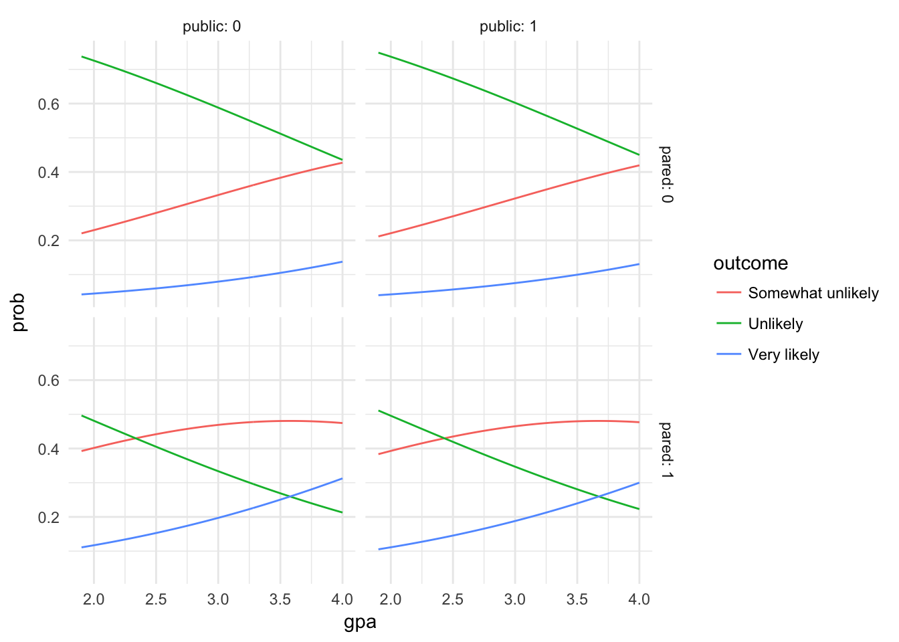
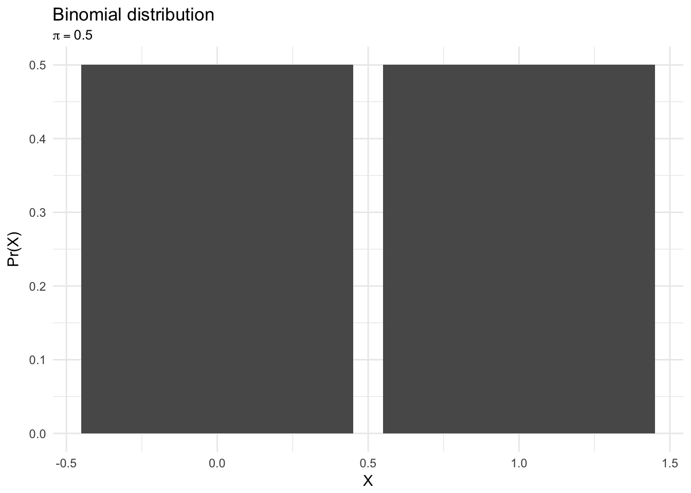
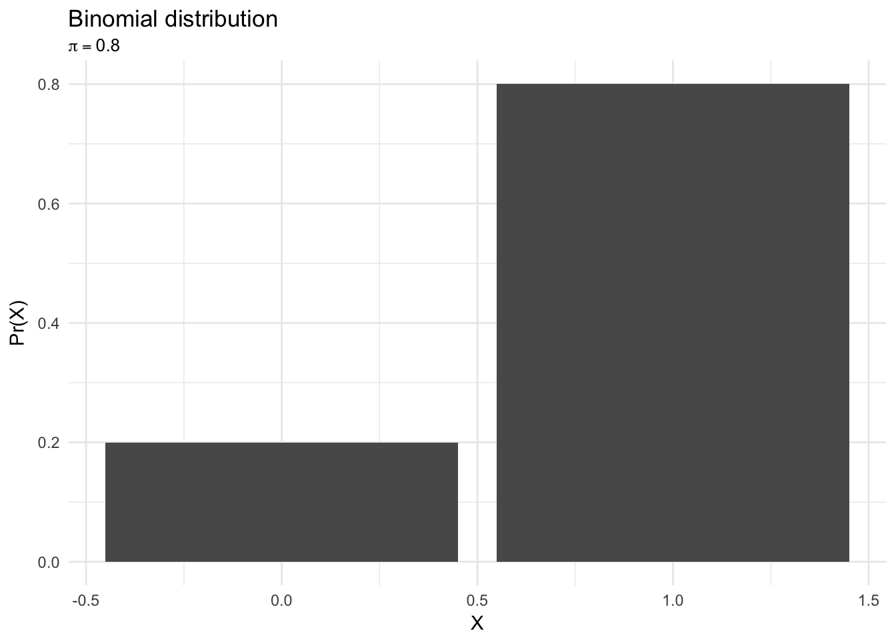
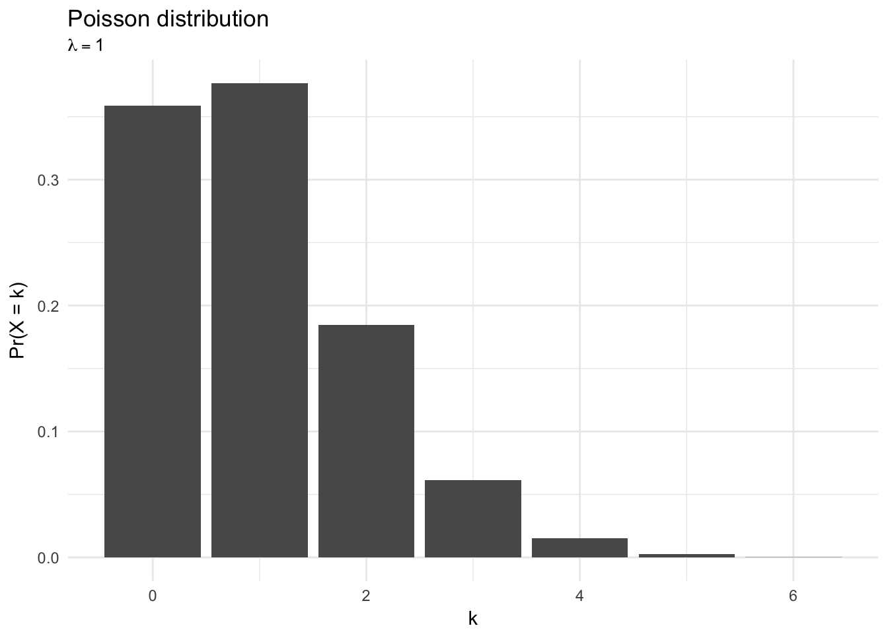
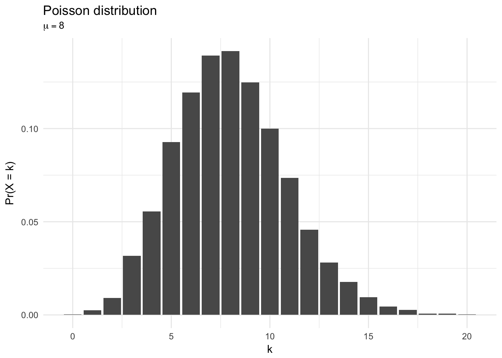
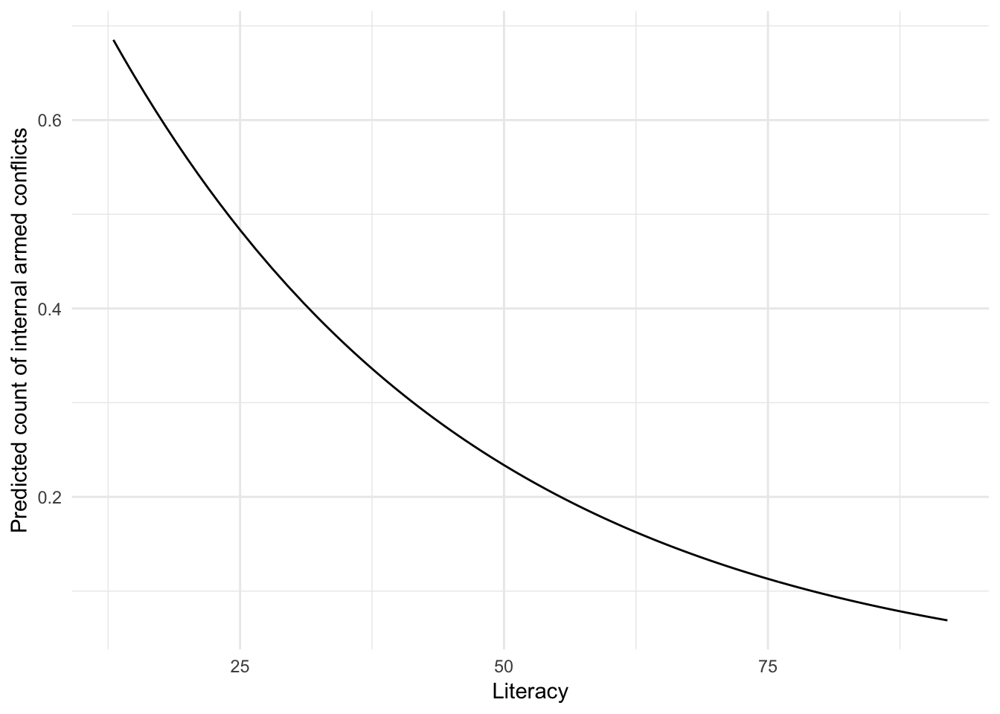

Statistical learning: generalized linear models
MACS 30100 - Perspectives on Computational Modeling
Objectives
- Define the generalized linear model (GLM)
- Identify the three elements of a GLM
- Probability distribution
- Linear predictor
- Link function
- Explain ordinary least squares regression as a GLM
- Explain logistic regression as a GLM
- Introduce ordinal and multinomial logistic regression for discrete variables with more than two classes
- Introduce poisson regression for count data
library(tidyverse)
library(modelr)
library(broom)
library(haven)
library(nnet)
set.seed(1234)
theme_set(theme_minimal())Generalized linear models
Generalized linear models are a flexible class of models that allow us to estimate linear regression for response variables that have error distribution models other than the normal distribution. GLMs are typically estimated via maximum likelihood estimation, though can also be estimated via generalized method of moments as well as Bayesian procedures.
Elements of a GLM
A GLM consists of three components
- A random component specifying the conditional distribution of the response variable, \(Y_i\), given the values of the predictor variables in the model. Typically these distributions are a member of the exponential family, a set of related probability distributions.
A linear predictor that is a linear function of regressors:
\[\eta_i = \alpha + \beta_{1}X_{i1} + \beta_{2}X_{i2} + \dots + \beta_{k}X_{ik}\]
The regressors are prespecified functions of the explanatory variables. This is exactly like the form you’ve seen for linear and logistic regression, because in fact linear and logistic regression are types of GLMs.A link function \(g(\cdot)\) which transforms the expectation of the response variable, \(\mu_i \equiv E(Y_i)\) to the linear predictor:
\[g(\mu_i) = \eta_i = \alpha + \beta_{1}X_{i1} + \beta_{2}X_{i2} + \dots + \beta_{k}X_{ik}\]
Because the link function must also be invertible, we can also write it as:
\[\mu_i = g^{-1}(\eta_i) = g^{-1}(\alpha + \beta_{1}X_{i1} + \beta_{2}X_{i2} + \dots + \beta_{k}X_{ik})\]
The inverted link function is also known as the mean function. The purpose of the link function is to relate the linear predictor to the mean of the distribution function.
For any given probability distribution, there are common link functions called canonical link functions that are typically used in conjunction with the probability distribution in GLMs.
GLMs and ordinary least squares regression
Previously we have discussed ordinary least squares regression in the context of minimizing the sum of the squared errors. This approach has a closed-form solution in the form of linear algebra:
\[\beta = (X^{'}X)^{-1}X^{'}Y\]
However we can also treat OLS as a special case of a generalized linear model.
We presume the response variable \(Y\) is drawn from a Gaussian (normal) distribution with mean \(\mu\) and variance \(\sigma^2\):
\[Pr(Y_i = y_i) = \frac{1}{\sqrt{2\pi\sigma^2}} \exp \left[\frac{(Y_i - \mu)^2}{2\sigma^2}\right]\]
data_frame(x = rnorm(1000, 0, 1)) %>%
ggplot(aes(x)) +
# geom_histogram() +
stat_function(fun = dnorm, args = list(mean = 0, sd = 1)) +
labs(title = "Normal distribution",
subtitle = expression(paste(mu == 0, " , ", sigma^{2} == 1)))
This is the density, or probability density function (PDF) of the variable \(Y\).
- The probability that, for any one observation \(i\), \(Y\) will take on the particular value \(y\).
- This is a function of \(\mu\), the expected value of the distribution, and \(\sigma^2\), the variability of the distribution around the mean.
We want to generate estimates of the parameters \(\hat{\mu}\) and \(\hat{\sigma^2}\) based on the data. How do we do this? Maximum likelihood estimation of course. We need to find the parameter values that maximize the log-likelihood function. For the normal distribution, the log-likelihood function is:
\[\ln L(\hat{\mu}, \hat{\sigma}^2 | Y) = \ln \prod_{i = 1}^{N}{\frac{1}{\sqrt{2\pi\sigma^2}} \exp \left[\frac{(Y_i - \mu)^2}{2\sigma^2}\right]}\]
Which can also be written as:
\[\ln L(\hat{\mu}, \hat{\sigma}^2 | Y) = \sum_{i=1}^{N}{\ln\left(\frac{1}{\sqrt{2\pi\sigma^2}} \exp \left[\frac{(Y_i - \mu)^2}{2\sigma^2}\right]\right)}\] \[\ln L(\hat{\mu}, \hat{\sigma}^2 | Y) = -\frac{N}{2} \ln(2\pi) - \left[ \sum_{i = 1}^{N} \ln{\sigma^2 - \frac{1}{2\sigma^2}} (Y_i - \mu)^2 \right]\]
Suppose we had a sample of assistant professor salaries:
| id | salary |
|---|---|
| 1 | 60 |
| 2 | 55 |
| 3 | 65 |
| 4 | 50 |
| 5 | 70 |
If we want to explain the distribution of possible assistant professor salaries given these data points, we could use maximum-likelihood estimation to find the \(\hat{\mu}\) that maximizes the likelihood of the data. We are testing different values for \(\mu\) to see what optimizes the function. If we have no regressors or predictors, \(\hat{\mu}\) is a constant. The log-likelihood curve would look like this:
likelihood.normal.mu = function(mu, sig2 = 1, x) {
# mu mean of normal distribution for given sig
# x vector of data
n = length(x)
a1 = (2*pi*sig2)^-(n/2)
a2 = -1/(2*sig2)
y = (x-mu)^2
ans = a1*exp(a2*sum(y))
return(log(ans))
}
data_frame(mu_hat = seq(57, 63, by = .05),
logLik = map_dbl(mu_hat, likelihood.normal.mu, x = prof$salary)) %>%
ggplot(aes(mu_hat, logLik)) +
geom_line() +
labs(x = expression(hat(mu)),
y = "Log-likelihood")
And the maximum is 60, which is the mean of the 5 sample observations.
But more typically we want \(\mu\) to be a function of some other variable \(X\). We can write this as:
\[E(Y) \equiv \mu = \beta_0 + \beta_{1}X_{i}\]
\[\mathrm{Var}(Y) = \sigma^2\]
Now we just substitute this equation for the systematic mean part (\(\mu\)) in the previous equations:
\[\ln L(\beta_0, \beta_1, \sigma^2 | Y) = \ln \prod_{i = 1}^{N}{\frac{1}{\sqrt{2\pi\sigma^2}} \exp \left[\frac{(Y_i - \beta_0 - \beta_{1}X_{i})^2}{2\sigma^2}\right]}\] \[\ln L(\beta_0, \beta_1, \sigma^2 | Y) = -\frac{N}{2} \ln(2\pi) - \left[ \sum_{i = 1}^{N} \ln{\sigma^2 - \frac{1}{2\sigma^2}} (Y_i - \beta_0 - \beta_{1}X_{i})^2 \right]\]
Connecting MLE estimator to OLS
With respect to the parameters \(\{\beta_0, \beta_1, \sigma^2\}\), only the last term is important. The first one (\(-\frac{N}{2} \ln(2\pi)\)) is invariant with respect to the parameters of interest, and so it can be dropped using the Fisher-Neyman Factorization Lemma. Thus the kernal of the log-likelihood is:
\[-\sum_{i = 1}^{N} \ln{\sigma^2 - \frac{1}{2\sigma^2}} (Y_i - \beta_0 - \beta_{1}X_{i})^2\]
Which is eeriely familiar to the sum-of-squared-errors term, merely scaled by the variance parameter \(\sigma^2\):
\[RSS = \sum_{i = 1}^{N} (Y_i - \beta_0 - \beta_{1}X_{i})^2\]
This proves the least-squares estimator of OLS \(\beta\)s is the maximum likelihood estimator as well.
Completing the elements
So far we have the random component (a normal distribution) and a linear predictor (\(\beta_0 + \beta_{1}X_{i}\)). Where is the link function? We actually have it already too. Because the normal distribution already supports an infinite range of real numbers \((-, +\infty)\), the data naturally scaled to the linear predictor. What we use here is an identity link function that returns its argument unaltered:
\[\eta_i = g(\mu_i) = \mu_i\] \[\mu_i = g^{-1}(\eta_i) = \eta_i\]
So to recap, in linear regression:
The random component is the normal distribution:
\[Pr(Y_i = y_i) = \frac{1}{\sqrt{2\pi\sigma^2}} \exp \left[\frac{(Y_i - \mu)^2}{2\sigma^2}\right]\]
The linear predictor is:
\[\eta_{i} = \beta_0 + \beta_{1}X_{i}\]
The link function is the identity function:
\[\eta_i = \mu_i\]
Therefore with ordinary least squares linear regression, we have now demonstrated that it is merely one type of generalized linear model.
GLMs and logistic regression
The normal distribution does not properly describe binary outcome variables which take on values of \([0,1]\), because the normal distribution allows for values along the entire real number line. This was the problem last class in trying to apply OLS to the Titanic dataset.
Instead, we assume our outcome variable \(Y\) is drawn from the binomial distribution with probability \(\pi\):
\[Pr(Y_i = y_i | \pi_i) = \pi_i^{y_i} (1 - \pi_i)^{(1 - y_i)}\]
data_frame(x = c(0, 1),
y = c(.5, .5)) %>%
ggplot(aes(x, y)) +
geom_col() +
labs(title = "Binomial distribution",
subtitle = expression(pi == .5),
x = "X",
y = "Pr(X)")
data_frame(x = c(0, 1),
y = c(.2, .8)) %>%
ggplot(aes(x, y)) +
geom_col() +
labs(title = "Binomial distribution",
subtitle = expression(pi == .8),
x = "X",
y = "Pr(X)")
data_frame(x = c(0, 1),
y = c(.8, .2)) %>%
ggplot(aes(x, y)) +
geom_col() +
labs(title = "Binomial distribution",
subtitle = expression(pi == .2),
x = "X",
y = "Pr(X)")
This is a probability mass function (PMF):
- The probability that, for any one observation \(i\), \(Y\) will take on the particular value \(y\).
- \(Y_i\) takes on the expected value of 1 with probability \(\pi\) and 0 with probability \(1 - \pi\)., so \(\pi_i\) is the conditional probability of sampling a 1 in this group.
Of course, the probability of the outcome \(Y\) may vary systematically given known predictors. To incorporate that into the model, we need to choose a linear predictor:
\[\pi_i = \eta_i\]
Now in the linear context we would write something like this:
\[g(\pi_i) \equiv \eta_i = \beta_0 + \beta_{1}X_i\]
However remember the problem with that approach using the Titanic data. We need to constrain the linear predictor to the probability range \([0,1]\). So in logistic regression, we cannot use the identity link function. Instead, we use the logit link function to constrain the linear predictor onto the \([0,1]\) range:
\[g(\pi_i) = \frac{e^{\eta_i}}{1 + e^{\eta_i}}\]
So to recap, for logistic regression:
The random component is the Bernoulli distribution
\[Pr(Y_i = y_i | \pi) = \pi_i^{y_i} (1 - \pi_i)^{(1 - y_i)}\]
The linear predictor is:
\[\eta_i = \beta_0 + \beta_{1}X_i\]
The link function is the logit function:
\[\eta_i = \ln \left( \frac{\pi}{1 - \pi} \right)\]
So the likelihood for a given observation \(i\) is:
\[L_i = \left( \frac{e^{\eta_i}}{1 + e^{\eta_i}} \right) ^ {Y_i} \left[ 1 - \left( \frac{e^{\eta_i}}{1 + e^{\eta_i}} \right) \right]^{1 - Y_i}\]
\[L_i = \left( \frac{e^{\beta_0 + \beta_{1}X_i}}{1 + e^{\beta_0 + \beta_{1}X_i}} \right) ^ {Y_i} \left[ 1 - \left( \frac{e^{\beta_0 + \beta_{1}X_i}}{1 + e^{\beta_0 + \beta_{1}X_i}} \right) \right]^{1 - Y_i}\]
The product of which yields the likelihood function:
\[L = \prod_{i = 1}^{N} \left( \frac{e^{\beta_0 + \beta_{1}X_i}}{1 + e^{\beta_0 + \beta_{1}X_i}} \right) ^ {Y_i} \left[ 1 - \left( \frac{e^{\beta_0 + \beta_{1}X_i}}{1 + e^{\beta_0 + \beta_{1}X_i}} \right) \right]^{1 - Y_i}\]
And therefore the log-likelihood function:
\[\ln L = \sum_{i = 1}^{N} Y_i \ln \left( \frac{e^{\beta_0 + \beta_{1}X_i}}{1 + e^{\beta_0 + \beta_{1}X_i}} \right) + (1 - Y_i) \ln \left[ 1 - \left( \frac{e^{\beta_0 + \beta_{1}X_i}}{1 + e^{\beta_0 + \beta_{1}X_i}} \right) \right]\]
Which we maximize with respect to the \(\beta\)s to obtain our estimated parameters, just as we would linear regression.
Logistic regression for more than two response classes
A downside to logistic regression as presented above is that it only works for response variables with two potential values. However it is common to encounter discrete variables with more than two possible values. Consider voting in a legislature. Roll-call votes are typically recorded as:
- Yay
- Nay
However there are other potential outcomes for legislators. We could instead code their votes as:
- Yay
- Nay
- Abstain
- Not present
If a large number of legislators abstain or are missing from a vote, we may not want to throw that information away by arbitrarily restricting the outcome to two possibilities.
Multinomial logistic regression
We can generalize the dichotomous logit model to a polytomy (more than 2 outcomes) bby employing the multivariate logistic distribution. Here the response variable \(Y\) can take on any of \(m\) discrete values from \(1,2,\dots,m\). We presume the ordering of the values does not matter, so that \(\pi_{ij}\) denotes the probability that the \(i\)th observation falls into the \(j\)th category of the response variable:
\[\pi_{ij} \equiv \text{Pr}(Y_i = j), \text{for} j = 1, \dots, m\]
For a model with \(k\) regressors, \(X_1, \dots, X_k\), this dependence of \(\pi_{ij}\) can be modeled using the multivariate logistic distribution:
\[\pi_{ij} = \frac{\exp[\gamma_{0j} + \gamma_{1j}X_{i1} + \dots + \gamma_{kj}X_{ik}]}{1 + \sum_{l = 1}^{m-1} \exp[\gamma_{0l} + \gamma_{1l}X_{i1} + \dots + \gamma_{kl}X_{ik}]}, \text{for } j = 1, \dots, m-1\]
\[\pi_{im} = 1 - \sum_{i = 1}^{m-1} \pi_{ij}\]
There is one set of parameters \(\gamma_{0j}, \gamma_{1j}, \dots, \gamma_{kj}\) for each set of response values but the last one. The last category (category \(m\)) serves as the baseline category. The response category probabilities for each observation must sum to 1:
\[\sum_{j = 1}^{m} = 1\]
With algebraic manipulation, we can rewrite the probability function as:
\[\ln \frac{\pi_{ij}}{\pi_{im}} = \gamma_{0j} + \gamma_{1j}X_{i1} + \dots + \gamma_{kj}X_{ik}, \text{for } j = 1, \dots, m\]
So the estimated parameters tell us the log-odds of membership in any category \(j\) versus the baseline category. We could rewrite this equation to compare the log-odds of membership in any two categories. This also demonstrates that the dichotomous logit model is a special case of the multinominal logit model:
\[\ln \frac{\pi_{i1}}{\pi_{i2}} = \ln \frac{\pi_{i1}}{1 - \pi_{i1}} = \gamma_{01} + \gamma_{11}X_{i1} + \dots + \gamma_{k1}X_{ik}\]
Applying multinomial logisitic regression
Let’s return to our Titanic dataset. Recall the dataset and codebook:
library(titanic)
titanic <- titanic_train %>%
as_tibble() %>%
# remove missing values
filter(Embarked != "") %>%
na.omit()
titanic %>%
head() %>%
knitr::kable()| PassengerId | Survived | Pclass | Name | Sex | Age | SibSp | Parch | Ticket | Fare | Cabin | Embarked |
|---|---|---|---|---|---|---|---|---|---|---|---|
| 1 | 0 | 3 | Braund, Mr. Owen Harris | male | 22 | 1 | 0 | A/5 21171 | 7.2500 | S | |
| 2 | 1 | 1 | Cumings, Mrs. John Bradley (Florence Briggs Thayer) | female | 38 | 1 | 0 | PC 17599 | 71.2833 | C85 | C |
| 3 | 1 | 3 | Heikkinen, Miss. Laina | female | 26 | 0 | 0 | STON/O2. 3101282 | 7.9250 | S | |
| 4 | 1 | 1 | Futrelle, Mrs. Jacques Heath (Lily May Peel) | female | 35 | 1 | 0 | 113803 | 53.1000 | C123 | S |
| 5 | 0 | 3 | Allen, Mr. William Henry | male | 35 | 0 | 0 | 373450 | 8.0500 | S | |
| 7 | 0 | 1 | McCarthy, Mr. Timothy J | male | 54 | 0 | 0 | 17463 | 51.8625 | E46 | S |
The codebook contains the following information on the variables:
VARIABLE DESCRIPTIONS:
Survived Survival
(0 = No; 1 = Yes)
Pclass Passenger Class
(1 = 1st; 2 = 2nd; 3 = 3rd)
Name Name
Sex Sex
Age Age
SibSp Number of Siblings/Spouses Aboard
Parch Number of Parents/Children Aboard
Ticket Ticket Number
Fare Passenger Fare
Cabin Cabin
Embarked Port of Embarkation
(C = Cherbourg; Q = Queenstown; S = Southampton)
SPECIAL NOTES:
Pclass is a proxy for socio-economic status (SES)
1st ~ Upper; 2nd ~ Middle; 3rd ~ Lower
Age is in Years; Fractional if Age less than One (1)
If the Age is Estimated, it is in the form xx.5
With respect to the family relation variables (i.e. sibsp and parch)
some relations were ignored. The following are the definitions used
for sibsp and parch.
Sibling: Brother, Sister, Stepbrother, or Stepsister of Passenger Aboard Titanic
Spouse: Husband or Wife of Passenger Aboard Titanic (Mistresses and Fiances Ignored)
Parent: Mother or Father of Passenger Aboard Titanic
Child: Son, Daughter, Stepson, or Stepdaughter of Passenger Aboard Titanic
Other family relatives excluded from this study include cousins,
nephews/nieces, aunts/uncles, and in-laws. Some children travelled
only with a nanny, therefore parch=0 for them. As well, some
travelled with very close friends or neighbors in a village, however,
the definitions do not support such relations.But this time instead of modeling survival we want to model port of embarkation as a function of passenger fare and age. First we set “Southampton” as our reference category, then we can use the multinom() function from the nnet library to do this.
titanic_multi <- titanic %>%
mutate(Embarked = relevel(factor(Embarked), ref = "S"))
port_mod <- multinom(Embarked ~ Fare, data = titanic_multi)## # weights: 9 (4 variable)
## initial value 782.211950
## iter 10 value 423.965155
## final value 422.773331
## convergedsummary(port_mod)## Call:
## multinom(formula = Embarked ~ Fare, data = titanic_multi)
##
## Coefficients:
## (Intercept) Fare
## C -1.961393 0.01255073
## Q -2.635604 -0.01593038
##
## Std. Errors:
## (Intercept) Fare
## C 0.1327167 0.002020486
## Q 0.2783763 0.010823741
##
## Residual Deviance: 845.5467
## AIC: 853.5467# calculate t-statistics
(port_mod_t <- summary(port_mod)$coefficients / summary(port_mod)$standard.errors)## (Intercept) Fare
## C -14.778790 6.211738
## Q -9.467776 -1.471800# calculate p-values
(port_mod_p <- (1 - pnorm(abs(port_mod_t), 0, 1))*2)## (Intercept) Fare
## C 0 5.240164e-10
## Q 0 1.410749e-01As expected, we’ve estimated separate parameters and standard errors for each of our categories, Cherbourg and Queenstown, compared against our reference category Southampton. Each of these blocks has one row of values corresponding to a separate category. Focusing on the block of coefficients, we can look at the first row comparing Embarked = "C" to our baseline Embarked = "Q" and the second row comparing Embarked = "Q" to our baseline Embarked = "Q".
- A one-unit increase in
Fareis associated with a 0.013 increase in the log-odds of embarking from Cherbourg as opposed to Southampton. - A one-unit increase in
Fareis associated with a 0.013 decrease in the log-odds of embarking from Cherbourg as opposed to Southampton.
We can convert the log-odds parameters to relative risks, also referred to as odds, by exponentiating the parameters:
(port_mod_exp <- exp(coef(port_mod)))## (Intercept) Fare
## C 0.14066240 1.0126298
## Q 0.07167565 0.9841958- The relative risk ratio for a one-unit increase in fare is 1.013 for embarking from Cherbourg vs. Southampton.
- The relative risk ratio for a one-unit increase in fare is 0.984 for embarking from Queenstown vs. Southampton.
We can also calculate predicted probabilities of each outcome given known values for fare.
dat_grid <- titanic %>%
data_grid(Fare)
dat_pred <- bind_cols(dat_grid,
predict(port_mod, dat_grid, type = "probs") %>%
as_tibble()) %>%
gather(port, prob, S:Q) %>%
mutate(port = factor(port, levels = c("C", "S", "Q"),
labels = c("Cherbourg", "Southampton", "Queenstown")))
ggplot(dat_pred, aes(Fare, prob, color = port)) +
geom_line() +
labs(x = "Fare",
y = "Predicted probability for port of embarkation")
As fare increases, the probability of embarking from Southampton decreases dramatically and increases for Cherbourg. Overall the probability of departing from Queenstown is low. Not surprising given that overall that had the lowest frequency of departure.
titanic %>%
ggplot(aes(Embarked)) +
geom_bar()
We could also look at the cumulative probability distribution:
ggplot(dat_pred, aes(Fare, prob, fill = port)) +
geom_area(position = "stack") +
labs(x = "Fare",
y = "Predicted probability for port of embarkation")
This demonstrates that for any given fare value, the probabilities of all the possible outcomes must add up to 1.
Ordinal logistic regression
Consider the case where your response variable contains more than 2 possible values and they are inherently ordered. Survey research typically contains answers measured using a Likert scale (strongly agree, agree, neither agree nor disagree, disagree, strongly disagree). What method should you use? Linear regression is not appropriate because the variable is discrete. Depending on the number of levels, some researchers may attempt to treat it as a continuous variable but when you only have 3-5 values this doesn’t work very well. Logistic regression sounds like it would work but so far we have only used it in situations where there are two possible outcomes. Can we generalize it to a larger number of response values?
Yes we can. This is called ordinal logistic regression. It works in situations where you have more than two possible outcomes and they contain an inherent ordering. It is similar to multinominal logistic regression but preserves the ordering of the variables. It presumes that the response variable is in fact a latent continuous variable that is a linear function of the \(X\)s plus a random error:
\[\zeta_i = \alpha + \beta_{1}X_{i1} + \dots + \beta_{k}X_{ik} + \epsilon_i\]
Rather than dividing the latent variable into two regions (as we would with a dichotomous variable), instead it is divided into \(m\) regions split by \(m-1\) thresholds. The thresholds are denoted by \(\alpha_k\), and we only observe the resulting response \(Y\):
\[Y_i = \begin{cases} 1 & \text{if } \zeta_{i} \leq \alpha_{1} \\ 2 & \text{if } \alpha_{1} \lt \zeta_{i} \leq \alpha_{2} \\ \vdots & \\ m - 1 & \text{if } \alpha_{m - 2} \lt \zeta_{i} \leq \alpha_{m - 1} \\ m & \text{if } \alpha_{m - 1} \lt \zeta_{i} \\ \end{cases}\]
Skipping some of the math, the result is an ordered logistic regression model. The parameters estimate for every one-unit increase in \(X\) the log-odds of \(Y_i\) increasing to the next level. If we exponentiate the parameters, we get the odds ratio. The important thing is that the change in log-odds between any given levels is constant - that is, a one-unit change in \(X\) equates to the same magnitude of change between outcomes \(0\) and \(1\), \(1\) and \(2\), etc. The only difference is the intercept for each value.
Let’s see how this works by predicting passenger class on the Titanic. We can use the polr function from the MASS library to estimate the ordered logistic regression model:1
titanic_ord <- titanic %>%
mutate(Pclass = factor(Pclass))
m <- MASS::polr(Pclass ~ Fare, data = titanic_ord, Hess=TRUE)
summary(m)## Call:
## MASS::polr(formula = Pclass ~ Fare, data = titanic_ord, Hess = TRUE)
##
## Coefficients:
## Value Std. Error t value
## Fare -0.09585 0.006819 -14.06
##
## Intercepts:
## Value Std. Error t value
## 1|2 -4.0640 0.2245 -18.1020
## 2|3 -2.0243 0.1527 -13.2566
##
## Residual Deviance: 970.3814
## AIC: 976.3814The model results give use estimated parameters and standard errors. However now we have two separate intercepts. These are the cut points used to determine the estimated thresholds \(\hat{\alpha_{k}}\) for the underlying latent variable. They are typically of little direct concern in our analysis. Instead, we care about the coefficients.
- For every one-pound increase in fare, the log-odds of a passenger’s berthing class change by -0.096. That is, the log-odds of berthing in second class are 0.096 lower than berthing in first class. The same for berthing in third class compared to second class.
We can convert the log-odds to an odds ratio by exponentiating the estimated parameter.
exp(coef(m))## Fare
## 0.9086044That is, the odds of berthing in second class are 0.909 the size of berthing in first class.
We can predict log-odds, odds, and predicted probabilities of each outcome.
dat_grid <- titanic_ord %>%
data_grid(Fare)
dat_pred <- bind_cols(dat_grid,
predict(m, dat_grid, type = "probs") %>%
as_tibble()) %>%
gather(outcome, prob, `1`:`3`)
ggplot(dat_pred, aes(Fare, prob, color = outcome)) +
geom_line() +
labs(x = "Fare amount",
y = "Predicted probability of passenger class",
color = "Passenger class")
Unsurprisingly, cheap fares have a high probability of 3rd class berthing, whereas expensive fairs are almost exclusively 1st class cabins.
Poisson regression
The Poisson distribution is a discrete probability function defined by:
\[P(Y_i = y_i | \mu) = \frac{\mu^{y_i} e^{-\mu}}{y_i!}\]
where \(\mu\) is the event rate (average number of events per interval), \(e\) is Euler’s number, \(y_i\) is an integer with range \([0, \infty]\), and \(y_i!\) is the factorial of \(y_i\). The mean \(\mu\) and variance \(\sigma\) of a Poisson distribution are the same parameterm and hence are both defined by \(\mu\).
data_frame(x = rpois(10000, 1)) %>%
ggplot(aes(x)) +
geom_bar(aes(y = (..count..)/sum(..count..))) +
labs(title = "Poisson distribution",
subtitle = expression(mu == 1),
x = "k",
y = "Pr(X = k)")
data_frame(x = rpois(10000, 4)) %>%
ggplot(aes(x)) +
geom_bar(aes(y = (..count..)/sum(..count..))) +
labs(title = "Poisson distribution",
subtitle = expression(mu == 4),
x = "k",
y = "Pr(X = k)")
data_frame(x = rpois(10000, 8)) %>%
ggplot(aes(x)) +
geom_bar(aes(y = (..count..)/sum(..count..))) +
labs(title = "Poisson distribution",
subtitle = expression(mu == 8),
x = "k",
y = "Pr(X = k)")
data_frame(x = rpois(100000, 1000)) %>%
ggplot(aes(x)) +
geom_histogram(aes(y = (..count..)/sum(..count..)), binwidth = 10) +
labs(title = "Poisson distribution",
subtitle = expression(mu == 1000),
x = "k",
y = "Pr(X = k)")
The Poisson distribution is ideal for explaining count variables, where the variable contains frequency counts of events occurring. This could include things such as:
- Number of persons killed by mule or horse kicks in the Prussian army per year (this was one of the first applications of the Poisson distribution)
- Number of terrorist attacks in a country per year
- Number of times an individual consumes ice cream per month
Count variables can take on non-negative integer values \(\{ 0,1,2,3,\dots \}\). To estimate a poisson regression model, we need the following elements:
The random component is the Poisson distribution:
\[P(Y_i = y_i | \mu) = \frac{\mu^{k} e^{-y_i}}{y_i!}\]
The linear predictor is
\[\eta_i = \beta_0 + \beta_{1}X_i\]
The canonical link function for the Poisson distribution is the log function
\[\eta_i = \ln(\mu)\]
So after substituting terms, we need to estimate the parameters that maximize the log-likelihood of:
\[P(Y_i = y_i | \beta_0, \beta_1) = \frac{\ln(\beta_0 + \beta_{1}X_i)^{k} e^{-y_i}}{y_i!}\]
Let’s test this method using some real-world data.
Internal armed conflict in Africa
africa <- read_dta("data/internal-conflict.dta")
africa## # A tibble: 650 × 12
## ccode year cabbr INTERNAL latitude longitude literacy refugees
## <dbl> <dbl> <chr> <dbl> <dbl> <dbl> <dbl> <dbl>
## 1 404 1995 0 12.07582 -14.64071 44.0 15400
## 2 404 1996 0 12.07582 -14.64071 42.5 15400
## 3 404 1997 GNB 0 12.07582 -14.64071 41.0 16000
## 4 404 1998 0 12.07582 -14.64071 39.5 6600
## 5 404 1999 GNB 0 12.07582 -14.64071 38.0 7100
## 6 404 2000 0 12.07582 -14.64071 40.0 7600
## 7 404 2001 GNB 0 12.07582 -14.64071 42.0 7300
## 8 404 2002 0 12.07582 -14.64071 44.0 7600
## 9 404 2003 0 12.07582 -14.64071 46.0 7600
## 10 404 2004 0 12.07582 -14.64071 48.0 7536
## # ... with 640 more rows, and 4 more variables: lnRefs <dbl>, lnGDP <dbl>,
## # lnTrade <dbl>, PolityLag <dbl>africa contains annual measures for 50 African countries from 1995-2007. The response variable INTERNAL contains a count of internal armed conflicts (aka civil wars and insurgencies) for each country in each year. Additional covariates include:
- Measures of latitude and longitude
- Adult literacy rate
- Number of refugees living in the country
- Lagged natural log of GDP and trade (in constant dollars)
- Lagged polity score (ranging from -10 to +10, with 10 = democracy)
ggplot(africa, aes(INTERNAL)) +
geom_histogram(binwidth = 1)
To estimate a Poisson regression model, we use the glm() function with family = "poisson".
africa_mod <- glm(INTERNAL ~ literacy, family = "poisson", data = africa)
summary(africa_mod)##
## Call:
## glm(formula = INTERNAL ~ literacy, family = "poisson", data = africa)
##
## Deviance Residuals:
## Min 1Q Median 3Q Max
## -1.1706 -0.6836 -0.5112 -0.4111 2.8078
##
## Coefficients:
## Estimate Std. Error z value Pr(>|z|)
## (Intercept) -0.0002775 0.2706730 -0.001 0.999
## literacy -0.0290697 0.0050831 -5.719 1.07e-08 ***
## ---
## Signif. codes: 0 '***' 0.001 '**' 0.01 '*' 0.05 '.' 0.1 ' ' 1
##
## (Dispersion parameter for poisson family taken to be 1)
##
## Null deviance: 405.45 on 563 degrees of freedom
## Residual deviance: 372.10 on 562 degrees of freedom
## (86 observations deleted due to missingness)
## AIC: 584.23
##
## Number of Fisher Scoring iterations: 6Interpreting estimated parameters
In linear regression, the parameters tell us the estimated linear relationship between the predictor and the response variable. In logistic regression, the parameters tell us the estimated linear relationship between the predictor and the log-odds of the response variable. In Poisson regression, the parameters tell us the estimated linear relationship between the predictor and the log-count of the response variable. So the parameter for literacy suggests that for every one-unit increase in adult literacy, we expect the log of the number of internal armed conflicts to decrease by 0.029.
africa %>%
data_grid(literacy) %>%
add_predictions(africa_mod) %>%
ggplot(aes(literacy, pred)) +
geom_line() +
labs(x = "Literacy",
y = "Predicted log-count of internal armed conflicts")
If we want to discuss the results in terms of the predicted count of the response variable, we need to exponentiate the parameters and predicted values.
exp(coef(africa_mod))## (Intercept) literacy
## 0.9997225 0.9713488africa %>%
data_grid(literacy) %>%
add_predictions(africa_mod) %>%
mutate(pred = exp(pred)) %>%
ggplot(aes(literacy, pred)) +
geom_line() +
labs(x = "Literacy",
y = "Predicted count of internal armed conflicts")
And so like with logistic regression, the relationship between predictors and the predicted log-count is linear, whereas the relationship between predictors and the predicted count is non-linear.
Multiple predictors
Like with other GLMs, we can add multiple predictors to the model.
africa_big <- glm(INTERNAL ~ literacy + PolityLag,
data = africa, family = "poisson")
summary(africa_big)##
## Call:
## glm(formula = INTERNAL ~ literacy + PolityLag, family = "poisson",
## data = africa)
##
## Deviance Residuals:
## Min 1Q Median 3Q Max
## -1.3804 -0.6773 -0.5169 -0.3424 2.8026
##
## Coefficients:
## Estimate Std. Error z value Pr(>|z|)
## (Intercept) 0.111814 0.286781 0.390 0.697
## literacy -0.030630 0.005394 -5.679 1.36e-08 ***
## PolityLag -0.047329 0.019465 -2.432 0.015 *
## ---
## Signif. codes: 0 '***' 0.001 '**' 0.01 '*' 0.05 '.' 0.1 ' ' 1
##
## (Dispersion parameter for poisson family taken to be 1)
##
## Null deviance: 380.81 on 520 degrees of freedom
## Residual deviance: 341.96 on 518 degrees of freedom
## (129 observations deleted due to missingness)
## AIC: 544.08
##
## Number of Fisher Scoring iterations: 6africa %>%
data_grid(literacy, PolityLag = seq(-10, 10, 4)) %>%
add_predictions(africa_big) %>%
mutate(pred = exp(pred),
PolityLag = factor(PolityLag)) %>%
ggplot(aes(literacy, pred, color = PolityLag)) +
geom_line() +
labs(x = "Literacy",
y = "Predicted count of internal armed conflicts")
Over or underdispersion
Recall that the Poisson distribution assumes that the mean and variance are identical. What happens if this assumption is violated? Sometimes this is the result of omitted variable bias, and we are just not accounting for all the variables that are included in the underlying data generating process. However if the variable truly has a conditional variance different from the conditional mean, then the Poisson distribution is not the most appropriate random component for the data.
There are a couple ways to test for overdispersion (variance larger than the mean) or underdispersion (variance smaller than the mean). One method is to estimate a quasi-poisson model. It still relies on the Poisson distribution, but introduces a dispersion parameter:
\[V(Y_i | \eta_i) = \phi \mu_i\]
If \(\phi > 1\), then the conditional variance of \(Y\) increases more rapidly than its mean (overdispersion). Estimating this dispersion parameter requires quasi-likelihood estimation which combines aspects of maximum-likelihood and method-of-moments and is beyond the scope of this class. However it yields virtually identical estimates of the parameters, and in the case of overdispersion will also yield larger (and more realistic) standard errors.
Let’s estimate the original African regression model using the quasi-poisson method:
africa_quasimod <- glm(INTERNAL ~ literacy, family = "quasipoisson", data = africa)
summary(africa_quasimod)##
## Call:
## glm(formula = INTERNAL ~ literacy, family = "quasipoisson", data = africa)
##
## Deviance Residuals:
## Min 1Q Median 3Q Max
## -1.1706 -0.6836 -0.5112 -0.4111 2.8078
##
## Coefficients:
## Estimate Std. Error t value Pr(>|t|)
## (Intercept) -0.0002775 0.2630325 -0.001 0.999
## literacy -0.0290697 0.0049396 -5.885 6.84e-09 ***
## ---
## Signif. codes: 0 '***' 0.001 '**' 0.01 '*' 0.05 '.' 0.1 ' ' 1
##
## (Dispersion parameter for quasipoisson family taken to be 0.9443412)
##
## Null deviance: 405.45 on 563 degrees of freedom
## Residual deviance: 372.10 on 562 degrees of freedom
## (86 observations deleted due to missingness)
## AIC: NA
##
## Number of Fisher Scoring iterations: 6Here the disperson parameter is actually quite close to 1, so underdispersion doesn’t appear to be a significant problem. What about for the full model?
africa_quasibig <- glm(INTERNAL ~ literacy + PolityLag,
data = africa, family = "quasipoisson")
summary(africa_quasibig)##
## Call:
## glm(formula = INTERNAL ~ literacy + PolityLag, family = "quasipoisson",
## data = africa)
##
## Deviance Residuals:
## Min 1Q Median 3Q Max
## -1.3804 -0.6773 -0.5169 -0.3424 2.8026
##
## Coefficients:
## Estimate Std. Error t value Pr(>|t|)
## (Intercept) 0.111814 0.278662 0.401 0.6884
## literacy -0.030630 0.005241 -5.844 9.01e-09 ***
## PolityLag -0.047329 0.018914 -2.502 0.0126 *
## ---
## Signif. codes: 0 '***' 0.001 '**' 0.01 '*' 0.05 '.' 0.1 ' ' 1
##
## (Dispersion parameter for quasipoisson family taken to be 0.944181)
##
## Null deviance: 380.81 on 520 degrees of freedom
## Residual deviance: 341.96 on 518 degrees of freedom
## (129 observations deleted due to missingness)
## AIC: NA
##
## Number of Fisher Scoring iterations: 6Still quite similar to 1.
Session Info
devtools::session_info()## setting value
## version R version 3.4.1 (2017-06-30)
## system x86_64, darwin15.6.0
## ui X11
## language (EN)
## collate en_US.UTF-8
## tz America/Chicago
## date 2017-08-01
##
## package * version date source
## assertthat 0.2.0 2017-04-11 CRAN (R 3.4.0)
## backports 1.1.0 2017-05-22 CRAN (R 3.4.0)
## base * 3.4.1 2017-07-07 local
## base64enc 0.1-3 2015-07-28 CRAN (R 3.4.0)
## bindr 0.1 2016-11-13 CRAN (R 3.4.0)
## bindrcpp * 0.2 2017-06-17 CRAN (R 3.4.0)
## bit 1.1-12 2014-04-09 CRAN (R 3.4.0)
## bit64 0.9-7 2017-05-08 CRAN (R 3.4.0)
## blob 1.1.0 2017-06-17 CRAN (R 3.4.0)
## boxes 0.0.0.9000 2017-07-19 Github (r-pkgs/boxes@03098dc)
## broom * 0.4.2 2017-02-13 CRAN (R 3.4.0)
## car 2.1-5 2017-07-04 CRAN (R 3.4.1)
## caret * 6.0-76 2017-04-18 CRAN (R 3.4.0)
## cellranger 1.1.0 2016-07-27 CRAN (R 3.4.0)
## class 7.3-14 2015-08-30 CRAN (R 3.4.1)
## clisymbols 1.2.0 2017-05-21 cran (@1.2.0)
## codetools 0.2-15 2016-10-05 CRAN (R 3.4.1)
## colorspace 1.3-2 2016-12-14 CRAN (R 3.4.0)
## compiler 3.4.1 2017-07-07 local
## config 0.2 2016-08-02 CRAN (R 3.4.0)
## crayon 1.3.2.9000 2017-07-19 Github (gaborcsardi/crayon@750190f)
## datasets * 3.4.1 2017-07-07 local
## DBI 0.7 2017-06-18 CRAN (R 3.4.0)
## dbplyr 1.1.0 2017-06-27 CRAN (R 3.4.1)
## devtools 1.13.2 2017-06-02 CRAN (R 3.4.0)
## digest 0.6.12 2017-01-27 CRAN (R 3.4.0)
## dplyr * 0.7.2 2017-07-20 CRAN (R 3.4.1)
## e1071 1.6-8 2017-02-02 CRAN (R 3.4.0)
## evaluate 0.10.1 2017-06-24 CRAN (R 3.4.1)
## forcats * 0.2.0 2017-01-23 CRAN (R 3.4.0)
## foreach 1.4.3 2015-10-13 CRAN (R 3.4.0)
## foreign 0.8-69 2017-06-22 CRAN (R 3.4.1)
## gapminder * 0.2.0 2015-12-31 CRAN (R 3.4.0)
## gganimate * 0.1.0.9000 2017-05-26 Github (dgrtwo/gganimate@bf82002)
## ggplot2 * 2.2.1 2016-12-30 CRAN (R 3.4.0)
## glue 1.1.1 2017-06-21 CRAN (R 3.4.1)
## graphics * 3.4.1 2017-07-07 local
## grDevices * 3.4.1 2017-07-07 local
## grid 3.4.1 2017-07-07 local
## gtable 0.2.0 2016-02-26 CRAN (R 3.4.0)
## haven * 1.1.0 2017-07-09 CRAN (R 3.4.1)
## highr 0.6 2016-05-09 CRAN (R 3.4.0)
## hms 0.3 2016-11-22 CRAN (R 3.4.0)
## htmltools 0.3.6 2017-04-28 CRAN (R 3.4.0)
## httpuv 1.3.5 2017-07-04 CRAN (R 3.4.1)
## httr 1.2.1 2016-07-03 CRAN (R 3.4.0)
## iterators 1.0.8 2015-10-13 CRAN (R 3.4.0)
## jsonlite 1.5 2017-06-01 CRAN (R 3.4.0)
## knitr * 1.16 2017-05-18 CRAN (R 3.4.0)
## labeling 0.3 2014-08-23 CRAN (R 3.4.0)
## lattice * 0.20-35 2017-03-25 CRAN (R 3.4.1)
## lazyeval 0.2.0 2016-06-12 CRAN (R 3.4.0)
## lme4 1.1-13 2017-04-19 CRAN (R 3.4.0)
## lubridate 1.6.0 2016-09-13 CRAN (R 3.4.0)
## magrittr 1.5 2014-11-22 CRAN (R 3.4.0)
## MASS 7.3-47 2017-02-26 CRAN (R 3.4.1)
## Matrix 1.2-10 2017-05-03 CRAN (R 3.4.1)
## MatrixModels 0.4-1 2015-08-22 CRAN (R 3.4.0)
## memoise 1.1.0 2017-04-21 CRAN (R 3.4.0)
## methods 3.4.1 2017-07-07 local
## mgcv 1.8-18 2017-07-28 CRAN (R 3.4.1)
## mime 0.5 2016-07-07 CRAN (R 3.4.0)
## minqa 1.2.4 2014-10-09 CRAN (R 3.4.0)
## mnormt 1.5-5 2016-10-15 CRAN (R 3.4.0)
## ModelMetrics 1.1.0 2016-08-26 CRAN (R 3.4.0)
## modelr * 0.1.1 2017-07-24 CRAN (R 3.4.1)
## munsell 0.4.3 2016-02-13 CRAN (R 3.4.0)
## nlme 3.1-131 2017-02-06 CRAN (R 3.4.1)
## nloptr 1.0.4 2014-08-04 CRAN (R 3.4.0)
## nnet * 7.3-12 2016-02-02 CRAN (R 3.4.1)
## nycflights13 0.2.2 2017-01-27 CRAN (R 3.4.0)
## parallel 3.4.1 2017-07-07 local
## pbkrtest 0.4-7 2017-03-15 CRAN (R 3.4.0)
## pkgconfig 2.0.1 2017-03-21 CRAN (R 3.4.0)
## plyr 1.8.4 2016-06-08 CRAN (R 3.4.0)
## pROC * 1.10.0 2017-06-10 CRAN (R 3.4.0)
## psych 1.7.5 2017-05-03 CRAN (R 3.4.1)
## purrr * 0.2.2.2 2017-05-11 CRAN (R 3.4.0)
## quantreg 5.33 2017-04-18 CRAN (R 3.4.0)
## R6 2.2.2 2017-06-17 CRAN (R 3.4.0)
## rappdirs 0.3.1 2016-03-28 CRAN (R 3.4.0)
## rcfss * 0.1.5 2017-07-31 local
## Rcpp 0.12.12 2017-07-15 CRAN (R 3.4.1)
## readr * 1.1.1 2017-05-16 CRAN (R 3.4.0)
## readxl 1.0.0 2017-04-18 CRAN (R 3.4.0)
## reshape2 1.4.2 2016-10-22 CRAN (R 3.4.0)
## rlang 0.1.1 2017-05-18 CRAN (R 3.4.0)
## rmarkdown 1.6 2017-06-15 CRAN (R 3.4.0)
## rprojroot 1.2 2017-01-16 CRAN (R 3.4.0)
## RSQLite * 2.0 2017-06-19 CRAN (R 3.4.1)
## rstudioapi 0.6 2016-06-27 CRAN (R 3.4.0)
## rvest 0.3.2 2016-06-17 CRAN (R 3.4.0)
## scales 0.4.1 2016-11-09 CRAN (R 3.4.0)
## shiny 1.0.3 2017-04-26 CRAN (R 3.4.0)
## sparklyr * 0.6.0 2017-07-29 CRAN (R 3.4.1)
## SparseM 1.77 2017-04-23 CRAN (R 3.4.0)
## splines 3.4.1 2017-07-07 local
## stats * 3.4.1 2017-07-07 local
## stats4 3.4.1 2017-07-07 local
## stringi 1.1.5 2017-04-07 CRAN (R 3.4.0)
## stringr * 1.2.0 2017-02-18 CRAN (R 3.4.0)
## tibble * 1.3.3 2017-05-28 CRAN (R 3.4.0)
## tidyr * 0.6.3 2017-05-15 CRAN (R 3.4.0)
## tidyverse * 1.1.1.9000 2017-07-19 Github (tidyverse/tidyverse@a028619)
## titanic * 0.1.0 2015-08-31 CRAN (R 3.4.0)
## tools 3.4.1 2017-07-07 local
## tweenr * 0.1.5 2016-10-10 CRAN (R 3.4.0)
## utils * 3.4.1 2017-07-07 local
## withr 2.0.0 2017-07-28 CRAN (R 3.4.1)
## xml2 1.1.1 2017-01-24 CRAN (R 3.4.0)
## xtable 1.8-2 2016-02-05 CRAN (R 3.4.0)
## yaml 2.1.14 2016-11-12 CRAN (R 3.4.0)Note that the response variable must be coded as a factor, not a numeric, column.↩
This work is licensed under the CC BY-NC 4.0 Creative Commons License.